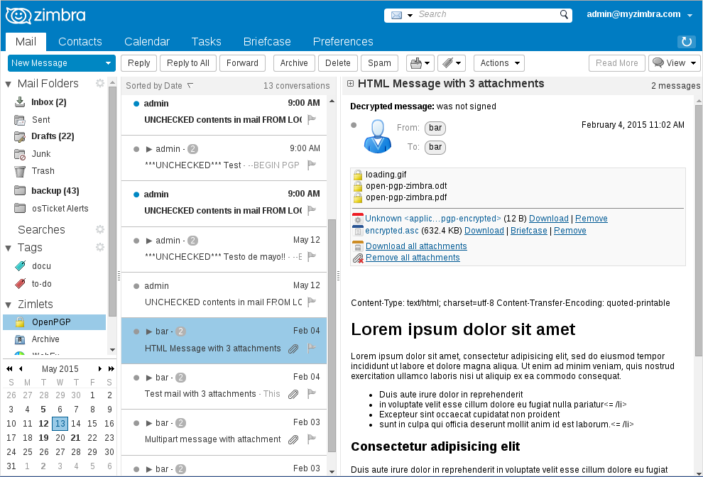

OpenPGP Zimlet
Contents
- 1 Overview
- 1.1 How It All Works
- 1.2 OpenPGP Zimlet Setup Guide
- 1.3 How to Send and Receive Public Keys
- 1.4 Auto Decrypt
- 1.5 How to Send Encrypted Messages with OpenPGP
- 1.6 Managing your contacts Public Keys
- 1.7 Importing your own PGP Private Key to OpenPGP
- 1.8 Supported Formats of OpenPGP
- 1.9 About Private Key Security
- 1.10 Zimbra Desktop
- 1.11 Storing public keys to Zimbra contacts
- 1.12 Thunderbird/Enigmail compatibility
- 1.13 Exporting public keys from Enigmail to Zimbra
- 1.15 Fingerprint
Overview
The OpenPGP Zimlet allows XMission's Zimbra webmail to encrypt and sign email messages.
OpenPGP encryption prevents your messages from being opened by anyone other than the intended recipient. It will prevents your message from being altered or changed by anyone other than yourself, maintaining the authenticity of your content.
- What is a Zimlet? - Zimlets are add-on features to your Zimbra email found in your Zimbra's Preferences tab under "Zimlets" They enhance the functionality of your Zimbra client.
- What is PGP/OpenPGP? - PGP stands for "Pretty Good Privacy". It is an encryption method shared between two people that have exchanged public and private keys to one another. OpenPGP is a PGP standard using the PGP security software of version 5.x+ as a basis.
- What is a Public/Private Key? - Both Public and Private keys are two unique cryptographic keys that work together to both encrypt and decrypt information, in this case, in plain text.
Note: Your public key may be shared with others, while your private key remains secret to yourself and your Zimbra OpenPGP Zimlet!
- What email applications support Encryption? Most modern email and webmail applications can support PGP key encryption technology including Zimbra webmail, Microsoft Outlook, Thunderbird, and more.
How It All Works
By creating a message that is encrypted with the OpenPGP Zimlet, only recipients with a matching private key are able to decrypt and read your email. The OpenPGP Zimlet makes this process as simple as clicking a few buttons. After composing your email, you may click the "Encrypt Message" option.
Note: Only Plain Text in the message body is encrypted. This Zimlet automatically converts messages to plain text when you click "Encrypt message."

OpenPGP Zimlet Setup Guide
1. Open your Preferences in Zimbra.

2. Navigate to "Zimlets".

3. Check the box for "OpenPGP".

4. Return to your "Mail" tab and expand the "Zimlets" options to find "OpenPGP".

5. Right click on OpenPGP and select "Generate Key Pair".

6. After generating your Key Pair, it will look similar to the message below:

How to Send and Receive Public Keys
1. To send a public key, simply right click the OpenPGP zimlet under the "Zimlets" windows and select "Send someone my public key".

2. To receive a public key from someone, they will commonly need to send you their key. You will receive an email with a message similar to the picture below:

Auto Decrypt
- You can enable/disable the "Auto decrypt" option, inside the "Manage Keys" menu.

How to Send Encrypted Messages with OpenPGP
1. Compose the body of your message followed by clicking "Encrypt Message".
- Note: All messages must have the body formatted in plain text.

2. Once you have finished, and have clicked "Encrypt Message" you will receive a confirmation window.
- Note: If you are sending to multiple recipients, you will need to use CTRL+Left Click to select multiple addresses. Use CMD+click on Mac.

- Note: It is important to add your attachments during this screen, or else they will not be encrypted.
3. The body of your message will be encrypted and encoded as base64. You may now send the message to the desired recipients.

Managing your contacts Public Keys
When you accept public keys, the OpenPGP Zimlet automatically adds them to your "Managed Keys" under the "Public Keys" section. This is unique to the user that sent them.

Importing your own PGP Private Key to OpenPGP
If you already have your own PGP Private Key, you can simply paste your key into the Private Key field inside the "Manage Keys" section of the OpenPGP zimlet.

Supported Formats of OpenPGP
Sending Messages
- Inline-PGP encrypted messages with full UTF-8 support in text/plain format
- Inline-PGP clear signed messages with full UTF-8 support in text/plain format
- Inline-PGP encrypted attachments
Receiving Messages
- Inline-PGP encrypted messages with full UTF-8 support in text/plain format
- Inline-PGP clear signed messages with full UTF-8 support in text/plain format
- Inline-PGP encrypted attachments
- PGP/MIME messages with body parts text/plain
- PGP/MIME messages with body parts text/html will be converted to text
- PGP/MIME messages with parts that use transfer encoding base64 and quoted-printable and charset UTF-8
- PGP/MIME encrypted attachments
About Private Key Security
It is important to keep your private key secure when using public key cryptography methods such as such as PGP. You should not share your private key with anyone under any circumstances.
With that said, please note that the OpenPGP Zimlet does NOT store your private key on our servers. If you choose to "store" your private key, it will be stored in your browser, not on our servers. It is stored with AES-256 encryption. If you choose to store the passphrase to your key, that passphrase can be stored either on our servers or in your browser's local storage. If you store your passphrase, it is potentially possible for somebody with access to your computer to acquire your unencrypted private key.
You can also choose to store nothing, providing your private key and passphrase manually every time you need to sign or encrypt a message.
We recommend storing your key, but not your passphrase, in your browser. This provides a good balance between security and convenience.
Zimbra Desktop
Those using the Zimbra Desktop application this Zimlet is not compatible for install. You will need to log in to your webmail to utilize this Zimlet.
Storing public keys to Zimbra contacts
Optionally you can store public keys in Contacts, the Zimbra Addressbook. First enable the Scan Contacts option then copy/paste public keys to the notes field of your contacts.


Reading messages encrypted/signed with Thunderbird/Enigmail
OpenPGP/MIME encrypted messages using RFC 3156 implemented in Thunderbird/Enigmail can be decrypted and verified by this Zimlet. This is beta functionality. Plain text messages and attachments are supported. HTML formatted messages are converted to plain text.

Attachments encrypted by Zimbra OpenPGP Zimlet can be decrypted by Thunderbird/Enigmail users, right click the attachment and click `Decrypt and Open`.

Exporting public keys from Enigmail to Zimbra
You can export all your public keys from Enigmail to Zimbra, first copy them from Enigmail Key Management, and then paste them in the notes field of a new contact in Zimbra, also enable contacts scanning.

Fingerprint
Key fingerprint verification is actually much easier than it sounds. In a nutshell, both sides should compare the fingerprints of the public key in question. If the fingerprints match, then they can proceed to send a message. If they do not, then the key can NOT be trusted.
The process of comparing fingerprints should be performed through a mechanism whereby the identity of the owner of the public key in question is known or trusted. This may come in the form of a phone call to a trusted phone number, a face-to-face conversation or for example a business card exchange. The goal is to ensure that the person you are communicating with is who you think he or she is. If you know the key’s owner and recognize their voice, it is easy enough to call them and verify the key’s fingerprint over the telephone.
It is best to use a different communication method than the one that was used to send the key itself. A good combination is to send the key via e-mail, and the key fingerprint via a telephone conversation or received in person on a business card.
License and third party FOSS libraries
Copyright (C) 2014-2016 Barry de Graaff
This program is free software: you can redistribute it and/or modify
it under the terms of the GNU General Public License as published by
the Free Software Foundation, either version 2 of the License, or
(at your option) any later version.
This program is distributed in the hope that it will be useful,
but WITHOUT ANY WARRANTY; without even the implied warranty of
MERCHANTABILITY or FITNESS FOR A PARTICULAR PURPOSE. See the
GNU General Public License for more details.
You should have received a copy of the GNU General Public License
along with this program. If not, see http://www.gnu.org/licenses/.
openpgp.js
openpgp.worker.js
OpenPGP.js is a Javascript implementation of the OpenPGP protocol. This is defined in RFC 4880.
https://github.com/openpgpjs/openpgpjs/blob/master/LICENSE
Licensed under the GNU Lesser General Public License (3.0 or any later version).
mimeparser.js
A "low level" mime parsing module.
https://github.com/emailjs/emailjs-mime-parser/blob/master/LICENSE
Copyright (c) 2013 Andris Reinman.
addressparser.js
A UMD module that allows you to parse mime formatted e-mail address lists in node and the browser.
https://github.com/emailjs/emailjs-addressparser/blob/master/LICENSE
Copyright (c) 2013 Andris Reinman.
mimefuncs.js
Encode and decode quoted printable and base64 strings.
https://www.npmjs.com/package/mimefuncs#license
Copyright (c) 2013 Andris Reinman.
stringencoding.js
A polyfill for the Encoding Living Standard API for the Web, allowing encoding and decoding of textual data to and from Typed Array buffers for binary data in JavaScript.
https://github.com/inexorabletash/text-encoding/blob/master/LICENSE.md
Released into the public domain.
zlib.min.js.map
JavaScript Zlib Library
https://github.com/imaya/zlib.js/blob/master/LICENSE
Copyright © 2012 imaya. Licensed under the MIT License.
aes.js, aes-ctr.js
JavaScript implementation of AES standard (NIST FIPS-197) for symmetric encryption. http://www.movable-type.co.uk/scripts/aes.html
https://github.com/chrisveness/crypto/blob/master/LICENSE
Copyright © 2014 Chris Veness. Licensed under the MIT License.
htmlToText.js
jsHtmlToText is a *very* basic regex-based HTML stripper.
https://github.com/eldios/htmlToText/blob/master/jsHtmlToText.js
Copyright (C) 2006 Google Inc. Licensed under the Apache License, Version 2.0
purify.js
DOMPurify is a DOM-only, super-fast, uber-tolerant XSS sanitizer for HTML, MathML and SVG.
https://github.com/cure53/DOMPurify/blob/master/LICENSE
Purify Copyright 2015 Mario Heiderich under the Apache License Version 2.0.
Icons ans logo
Icons and logo where taken from the tango-icon-theme package and where released to the Public Domain by the Tango Desktop Project.
File encrypted icon (file-pgp-encrypted) by Jakub Steiner http://jimmac.musichall.cz/ This file is licensed under the Creative Commons Attribution-Share Alike 2.0 Generic license.
This help page was written by XMission.